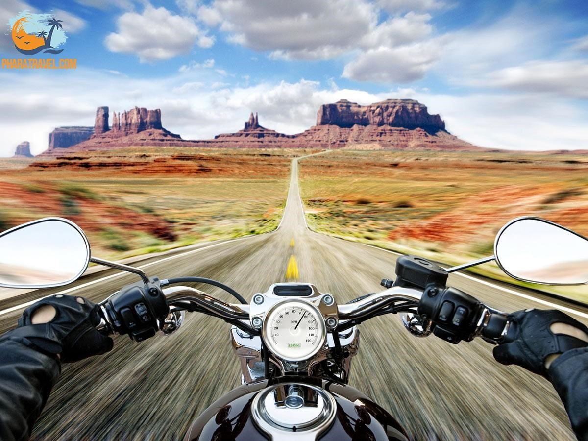
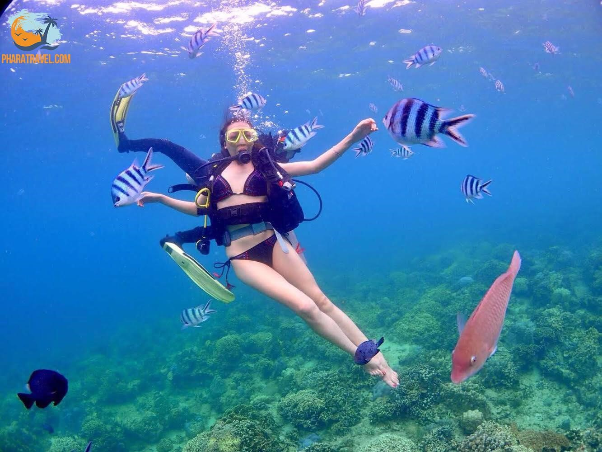
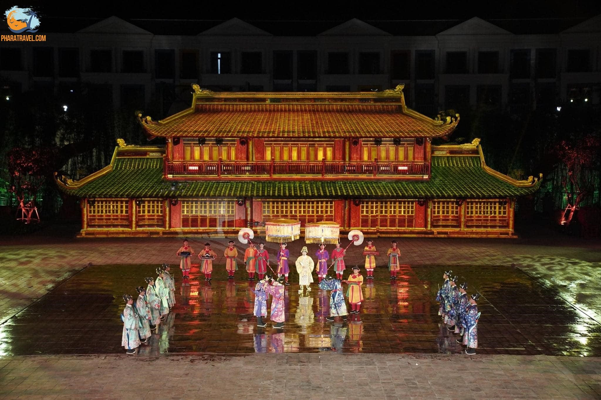
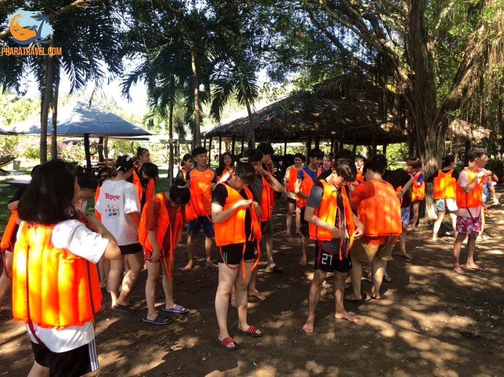

Trendy Travel 2022
CÁC LOẠI HÌNH DU LỊCH HIỆN NAY LÀ GÌ?
Nhu cầu du lịch hiện nay rất phát triển, đặc biệt là các bạn trẻ. Chính vì vậy các loại hình du lịch cũng trở nên phổ biến hơn như: Du lịch bụi, du lịch biển đảo, du lịch văn hóa, du lịch sinh thái.
- Loại hình du lịch bụi, du lịch khám phá

- Du lịch bụi có thể hiểu là một hình thức khám phá chứ không phải là du lịch tận hưởng. Loại hình du lịch này được hình thành từ những cá nhân đơn lẻ kết hợp với nhau tạo lên một chuyến đi, loại hình du lịch bụi có đặc điểm chính là không đi theo tour. Du lịch bụi là hoàn toàn tự túc, ưu điểm của du lịch bụi chính là không mất quá nhiều chi phí. Tuy nhiên, bạn cần có một chiếc xe máy ổn định phục vụ quá trình đi lại và một balo với đầy đủ dụng cụ thiết yếu.
- Loại hình du lịch biển đảo

- Với vị trí địa lý thuận lợi, nước ta hàng năm đón hàng triệu lượt khách du lịch biển đảo. Nước ta có 63 tỉnh thành trong đó lên tới 28 tỉnh thành giáp biển, chính vì vậy du lịch biển đảo là một loại hình du lịch chiếm lợi thế lớn. Hiện nay các địa phương giáp biển đang ngày một nâng cấp loại hình du lịch biển đảo để phục vụ nhu cầu của người dân. Trước kia du khách đi du lịch biển với mục đích chính là tắm biển nhưng ngày nay có rất nhiều hoạt động bổ ích như: Lướt ván, chơi các trò mạo hiểm,… Du lịch biển đảo nhận được sự quan tâm rất lớn mỗi khi hè về.
- Loại hình du lịch Văn hóa

- Văn hóa chia làm hai phạm trù: Văn hóa vật thể và văn hóa phi vật thể. Du lịch văn hóa chính là tìm hiểu về phong tục, tập quán, thói quen nếp sống của một địa phương hoặc một dân tộc. Khi trải nghiệm du lịch văn hóa chúng ta sẽ được trực tiếp trải nghiệm những món ăn, những lễ hội, những di tích văn hóa. Du lịch văn hóa có thể khái quát chính tham quan địa điểm lịch sử và những thói quen đã được hình thành từ lâu đời. Hiện nay, nhà nước Việt Nam rất coi trọng du lịch văn hóa. Chính vì vậy các địa điểm, di tích đặc biệt đã được tu bổ cải tạo hoàn thiện hơn rất nhiều. Mục đích lưu giữ và phát triển du lịch văn hóa nhằm duy trì những nét đặc sắc của dân tộc, giúp quá trình hội nhập quốc tế đảm bảo nguyên tắc “hòa nhập không hòa tan”.
- Loại hình du lịch Sinh Thái

- Du lịch sinh thái là một khái niệm quen thuộc được hình thành từ những năm 1991, khi đó người ta hiểu du lịch sinh thái là hình thức du lịch diễn ra trong một quần thể tự nhiên, mục đích của du lịch sinh thái chính là tìm kiếm cảm giác mới mẻ để tận hưởng, thư giãn, thưởng thức phong cảnh và các giá trị văn hóa tồn tại ở địa điểm đó. Nhưng trong thời gian gần đây với sức nóng lên của ô nhiễm môi trường, biến đổi khí hậu, cháy rừng,… du lịch sinh thái không chỉ đơn thuần là nghỉ dưỡng mà còn gắn liền với trách nhiệm của con người. Có một số quan điểm cho rằng du lịch sinh thái là hạn chế tối đa các tác động tiêu cực của con người vào môi trường tự nhiên.